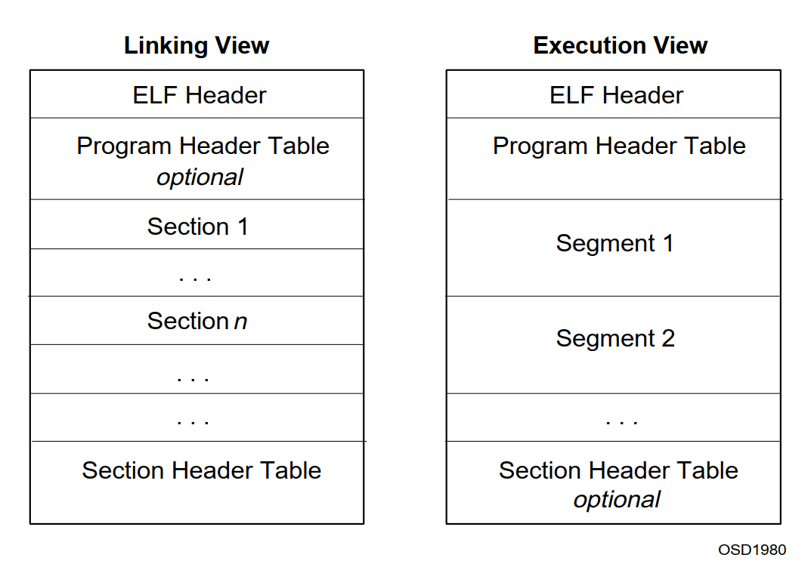
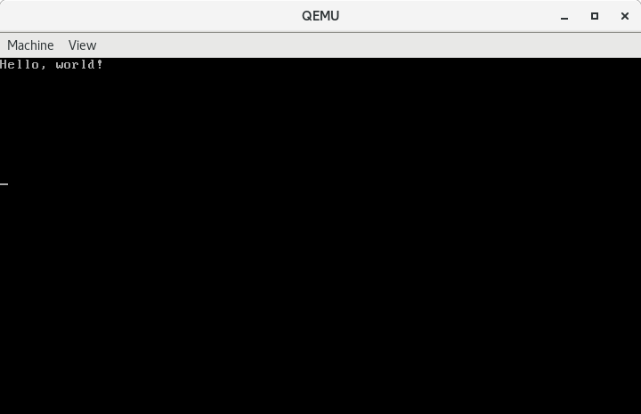

012-可以加载ELF格式内核的Bootloader
Contents
上篇文章中我们的内核最终是纯二进制的指令，我们并不知道内核的大小，只是假设它小于512字节，所以我们只从硬盘读取了一个扇区，加载到内存并执行。规范的做法是将内核组装成约定的格式，最终的内核映像符合这种格式。它有一个header，用于保存内核的元信息，内核的起始地址、加载到何处、由多少段组成等等。我们选择一种通用的格式ELF，下面我们简要介绍一下这种格式。
ELF
先贴一些资料，这些资料都介绍的非常详细，大家可以仔细研究。
这里只介绍我们要用到的一些基础知识。
ELF格式的文件看上去就像这样。

左边的Linking View对应目标文件，通常来讲就是编译生成的.o文件；右边的Execution View对应可执行文件，通常来讲就是链接生成的文件格式。文件由ELF Header开始，后跟Program Header Table、Sections或Segments，最后是Section Header Table。下面我们看一下ELF Header和Program Header的结构。
ELF Header
#define EI_NIDENT 16
typedef struct elf32_hdr
{
unsigned char e_ident[EI_NIDENT]; /* 魔数和相关信息 */
Elf32_Half e_type; /* 目标文件类型 */
Elf32_Half e_machine; /* 硬件体系 */
Elf32_Word e_version; /* 目标文件版本 */
Elf32_Addr e_entry; /* 程序进入点 */
Elf32_Off e_phoff; /* 程序头部偏移量 */
Elf32_Off e_shoff; /* 节头部偏移量 */
Elf32_Word e_flags; /* 处理器特定标志 */
Elf32_Half e_ehsize; /* ELF头部长度 */
Elf32_Half e_phentsize; /* 程序头部中一个条目的长度 */
Elf32_Half e_phnum; /* 程序头部条目个数 */
Elf32_Half e_shentsize; /* 节头部中一个条目的长度 */
Elf32_Half e_shnum; /* 节头部条目个数 */
Elf32_Half e_shstrndx; /* 节头部字符表索引 */
} Elf32_Ehdr;
其中各项数据的类型如下：
| Name | Size | Alignment | Purpose |
|---|---|---|---|
| Elf32_Addr | 4 | 4 | Unsigned program address |
| Elf32_Half | 2 | 2 | Unsigned medium integer |
| Elf32_Off | 4 | 4 | Unsigned file offset |
| Elf32_Sword | 4 | 4 | Signed large integer |
| Elf32_Word | 4 | 4 | Unsigned large integer |
| unsigned char | 1 | 1 | Unsigned small integer |
Program Header
typedef struct elf32_phdr
{
Elf32_Word p_type; /* 段类型 */
Elf32_Off p_offset; /* 段位置相对于文件开始处的偏移量 */
Elf32_Addr p_vaddr; /* 段在内存中的地址 */
Elf32_Addr p_paddr; /* 段的物理地址 */
Elf32_Word p_filesz; /* 段在文件中的长度 */
Elf32_Word p_memsz; /* 段在内存中的长度 */
Elf32_Word p_flags; /* 段的标记 */
Elf32_Word p_align; /* 段在内存中对齐标记 */
} Elf32_Phdr;
有了这两个结构我们就可以很方便的操作ELF格式的内核了。
实战
准备内核
我们的内核代码如下：
unsigned short *video_buffer = (unsigned short *)0xb8000;
char *message = "Hello, world!";
void kernel_main(void)
{
for (int i = 0; i < 80 * 25; i++)
{
video_buffer[i] = (video_buffer[i] & 0xff00) | ' ';
}
for (int i = 0; message[i] != '\0'; i++)
{
video_buffer[i] = (video_buffer[i] & 0xff00) | message[i];
}
while (1)
;
}
编译链接
# gcc -m32 -fno-builtin -fno-pic -nostdinc -c -o kernel.o kernel.c
# ld -m elf_i386 -e kernel_main -Ttext=0x100000 kernel.o -o kernel
接下来看看内核文件的信息。
查看file header。
# readelf -h kernel
ELF Header:
Magic: 7f 45 4c 46 01 01 01 00 00 00 00 00 00 00 00 00
Class: ELF32
Data: 2's complement, little endian
Version: 1 (current)
OS/ABI: UNIX - System V
ABI Version: 0
Type: EXEC (Executable file)
Machine: Intel 80386
Version: 0x1
Entry point address: 0x10000c
Start of program headers: 52 (bytes into file)
Start of section headers: 8592 (bytes into file)
Flags: 0x0
Size of this header: 52 (bytes)
Size of program headers: 32 (bytes)
Number of program headers: 3
Size of section headers: 40 (bytes)
Number of section headers: 9
Section header string table index: 8
程序入口点地址为：0x10000c，程序头起点为52。
查看program header。
# readelf -l kernel
Elf file type is EXEC (Executable file)
Entry point 0x10000c
There are 3 program headers, starting at offset 52
Program Headers:
Type Offset VirtAddr PhysAddr FileSiz MemSiz Flg Align
LOAD 0x001000 0x00100000 0x00100000 0x000e4 0x000e4 R E 0x1000
LOAD 0x002000 0x00102000 0x00102000 0x00008 0x00008 RW 0x1000
GNU_STACK 0x000000 0x00000000 0x00000000 0x00000 0x00000 RW 0x10
Section to Segment mapping:
Segment Sections...
00 .text .rodata .eh_frame
01 .data
02
其中可加载的段有两个，如第9行所示，该段相对于文件起始的偏移量为0x1000，虚拟地址为0x100000，物理地址为0x100000，在文件中的大小为0xe8，在内存中的大小为0xe8。这意味着如果我们知道内核文件在硬盘中的起始位置，那么用它加上offset 0x1000就可以得到该段在硬盘中的起始位置，然后从该位置开始，读取FileSiz 0xe8字节的数据到物理地址PhysAddr 0x100000，最后将FileSiz和MemSiz相差的地方填充成0即可。
下面给出bootloader的代码。
bootloader
bootloader由准备保护模式环境的汇编语言源文件bootasm.S和读取硬盘加载内核的bootmain.c组成。
#include "asm.h"
# 分别定义了两个符号，值分别为0x08，0x10
.set PROT_MODE_CSEG, 0x08 # code segment selector
.set PROT_MODE_DSEG, 0x10 # data segment selector
# 定义了一个全局可见的符号start
.global start
start:
# 告诉编译器以16位模式编译，因为BIOS在加载并运行我们的代码时是处于16位实地址模式的
.code16 # 用伪指令.code16告诉汇编器下面的代码按照16位的格式汇编
cli # 用于关闭中断，因为我们还没有设置如何处理保护模式下的中断
# Enable A20
inb $0x92, %al
orb $0x2, %al
outb %al, $0x92
# Load GDT
lgdt gdtdesc
# Switch from real to protected mode
movl %cr0, %eax
orl $0x1, %eax
movl %eax, %cr0
# Jump into 32-bit protected mode
ljmp $PROT_MODE_CSEG, $start32 # 使用ljmp长跳转指令跳转到保护模式代码段中
.code32
start32:
# 将ds, es, fs, gs, ss全部指向了4GB的数据段选择子
movw $PROT_MODE_DSEG, %ax
movw %ax, %ds
movw %ax, %es
movw %ax, %fs
movw %ax, %gs
movw %ax, %ss
# 设置堆栈指针esp指向start，这个标号在链接完成后对应的地址是0x7c00
movl $start, %esp
# 调用我们定义的C 语言代码的入口点。
call bootmain
jmp . # 死循环。
.p2align 2
gdt:
SEG_NULL
SEG(STA_X | STA_R, 0x0, 0xffffffff)
SEG(STA_W, 0x0, 0xffffffff)
# gdtdesc定义，其中低16位是GDT的长度减一，高32位是GDT的基地址。
gdtdesc:
.word gdtdesc-gdt -1
.long gdt
bootmain.c
#include "elf.h"
#include "x86.h"
#define SECTSIZE 512 //定义了SECTSIZE，表示一个扇区包含的字节数。
// 声明了方法readseg，用于加载一个段到内存中，参数pa给出要加载的物理内存地址，参数count给出加载的字节大小，参数offset给出段相对于内核文件起始位置的偏移量，即从offset处加载count字节到内存pa处。实际读取的字节数可能多于需要读取的字节数，因为硬盘读取的最小单位是扇区，即一次至少读取512字节。
void readseg(uint8_t *pa, uint32_t count, uint32_t offset);
void bootmain(void)
{
struct elfhdr *elf;
struct proghdr *ph, *eph;
void (*entry)(void);
uint8_t *pa;
int i;
// 将elf指向内存0x10000处，我们的内核ELF Header将加载到这里
elf = (struct elfhdr *)0x10000;
// 调用readseg从内核映像起始处读取4096个字节到内存0x10000处。4096个字节对于我们的内核文件头来说时足够的，所以我们可以确保已经将ELF Header完整的读入了内存。
readseg((uint8_t *)elf, 4096, 0);
// 判断文件头的魔数是否正确，错误的话直接返回到bootasm.S中，陷入死循环。
if (elf->magic != ELF_MAGIC)
return;
ph = (struct proghdr *)((uint8_t *)elf + elf->phoff); //将ph指向第一个Program Header
eph = ph + elf->phnum; // 将eph指向最后一个Program Header的结尾处。
for (; ph < eph; ph++) // 开始遍历所有的Program Header，并将对应的段加载到内存中。
{
pa = (uint8_t *)ph->paddr;
readseg(pa, ph->filesz, ph->off);
for (i = 0; i < ph->memsz - ph->filesz; i++)
{
*((char *)ph->paddr + ph->filesz + i) = 0;
}
}
// 将entry指向内核入口点并执行
entry = (void (*)(void))(elf->entry);
entry();
}
// 定义函数waitdisk，采用忙等的方式等待磁盘准备好进行数据传输。
void waitdisk(void)
{
while ((inb(0x1F7) & 0xC0) != 0x40)
;
}
// 定义函数readsect。 函数readsect用于从磁盘读取一个扇区到内存dst处
void readsect(void *dst, uint32_t offset)
{
waitdisk(); // 调用waitdisk以确保磁盘准备好交互。
outb(0x1F2, 1); // 向端口0x1F2写入1，指定读取的扇区数量为1
outb(0x1F3, offset); // 向端口0x1F3、0x1F4、0x1F5、0x1F6写入28位的逻辑扇区编号，
// 其中端口0x1F6的高四位写入0xE，表示以LBA模式访问主硬盘。
outb(0x1F4, offset >> 8);
outb(0x1F5, offset >> 16);
outb(0x1F6, (offset >> 24) | 0xE0);
outb(0x1F7, 0x20); // 端口0x1F7做为命令端口，向其写入0x20表示请求读硬盘。
waitdisk(); // 继续等待硬盘准备好数据。
insl(0x1F0, dst, SECTSIZE / 4); // 调用函数insl从端口0x1F0读取数据到dst，0x1F0是数据端口。
// 读取的次数是512 / 4，因为一个扇区包含512个字节，而insl指令一次可以读取4个字节。
}
// 定义函数readseg。参数依次为物理地址，要读取的字节数，段距离文件起始处的偏移量。
void readseg(uint8_t *pa, uint32_t count, uint32_t offset)
{
uint8_t *epa;
epa = pa + count;
pa -= offset % SECTSIZE; // 用于将pa按一个扇区，即512字节向下对齐。
//用于将偏移量从字节转换成扇区。比如一个段相对于内核文件起始处的偏移量是1024，那么在磁盘上就相当于偏移两个扇区(1024 / 512)，因为内核文件从偏移量为1的扇区开始，即第二个扇区（我们制作镜像的时候会将内核文件放在从第二个扇区开始的地方），所以该段相对于整个磁盘的起始地址还要+1。
offset = (offset / SECTSIZE) + 1;
// 循环调用readsect，将段所在的扇区一个接一个读入内存。
for (; pa < epa; pa += SECTSIZE, offset++)
readsect(pa, offset);
}
代码与之前的例子基本相同，只是多了对ELF格式文件的处理。
编译链接
# # 编译bootloader
# gcc -m32 -g -c bootasm.S
# gcc -m32 -g -fno-builtin -fno-pic -fno-stack-protector -nostdinc -Os -c bootmain.c
# ld -N -e start -Ttext=0x7c00 -m elf_i386 -o bootblock.o bootasm.o bootmain.o
# objdump -S bootblock.o > bootblock.asm
# objcopy -S -O binary -j .text bootblock.o bootblock.raw
# ./sign bootblock.raw bootblock
# # 编译kennel
# gcc -m32 -fno-builtin -fno-pic -nostdinc -c -o kernel.o kernel.c
# ld -m elf_i386 -e kernel_main -Ttext=0x100000 kernel.o -o kernel
制作镜像
# dd if=/dev/zero of=kernel.img count=10000
# dd if=bootblock of=kernel.img conv=notrunc
# dd if=kernel of=kernel.img seek=1 conv=notrunc
运行
# qemu-system-i386 kernel.img

完整的代码戳这里。
最后在解释一个刚才遗留问题，pa -= offset % SECTSIZE的作用是什么？
先来看看将text段起始地址设置成0x100000时的每个段的对应的情况。
# ld -m elf_i386 -e kernel_main -Ttext=0x100000 kernel.o -o kernel
# readelf -l kernel
Elf file type is EXEC (Executable file)
Entry point 0x10000c
There are 3 program headers, starting at offset 52
Program Headers:
Type Offset VirtAddr PhysAddr FileSiz MemSiz Flg Align
LOAD 0x001000 0x00100000 0x00100000 0x000e4 0x000e4 R E 0x1000
LOAD 0x002000 0x00102000 0x00102000 0x00008 0x00008 RW 0x1000
GNU_STACK 0x000000 0x00000000 0x00000000 0x00000 0x00000 RW 0x10
Section to Segment mapping:
Segment Sections...
00 .text .rodata .eh_frame
01 .data
02
注意第10行，这是我们的text段。pa=0x100000，offset=0x1000，pa -= offset % SECTSIZE之后pa还是等于0x100000。
如果将text段起始地址设置成0x100001，情况如下：
# ld -m elf_i386 -e kernel_main -Ttext=0x100001 kernel.o -o kernel
# readelf -l kernel
Elf file type is EXEC (Executable file)
Entry point 0x10000d
There are 3 program headers, starting at offset 52
Program Headers:
Type Offset VirtAddr PhysAddr FileSiz MemSiz Flg Align
LOAD 0x001001 0x00100001 0x00100001 0x000e3 0x000e3 R E 0x1000
LOAD 0x002000 0x00102000 0x00102000 0x00008 0x00008 RW 0x1000
GNU_STACK 0x000000 0x00000000 0x00000000 0x00000 0x00000 RW 0x10
Section to Segment mapping:
Segment Sections...
00 .text .rodata .eh_frame
01 .data
02
此时text段pa=0x100001，offset=0x1001，pa -= offset % SECTSIZE之后pa向下取整到0x100000，和一个扇区大小对齐。